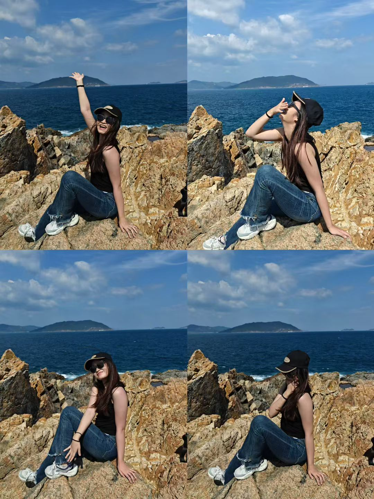
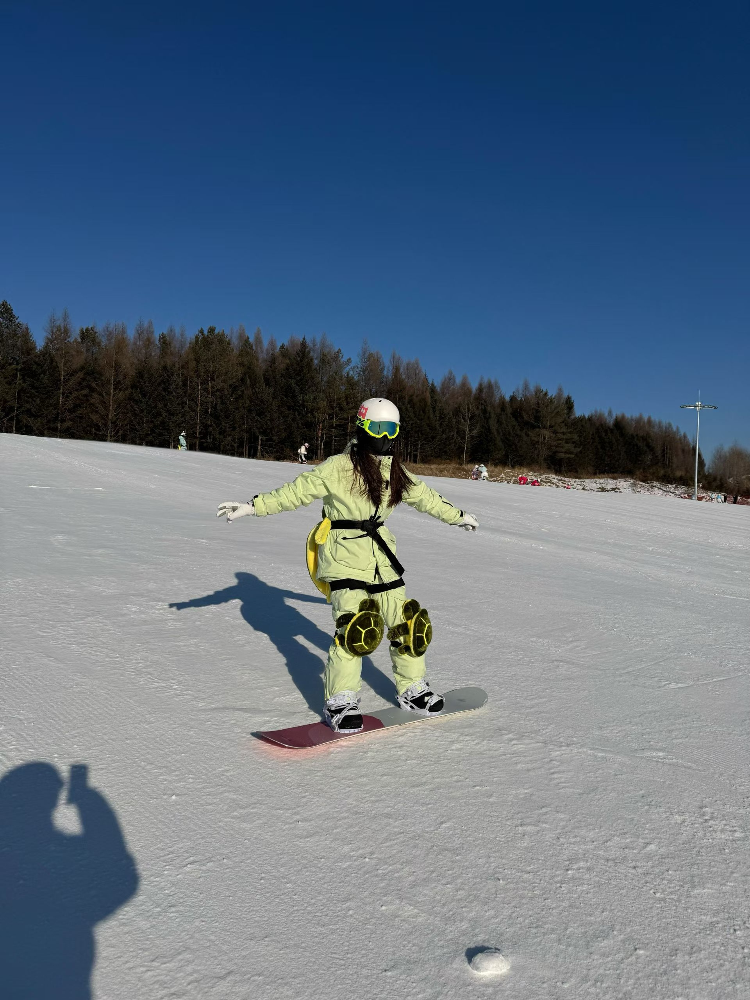
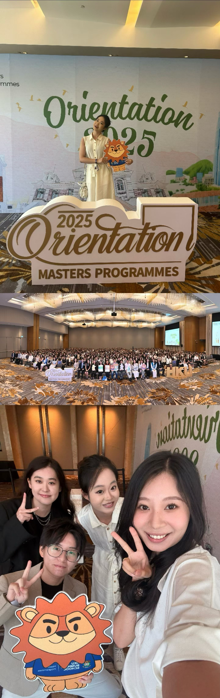
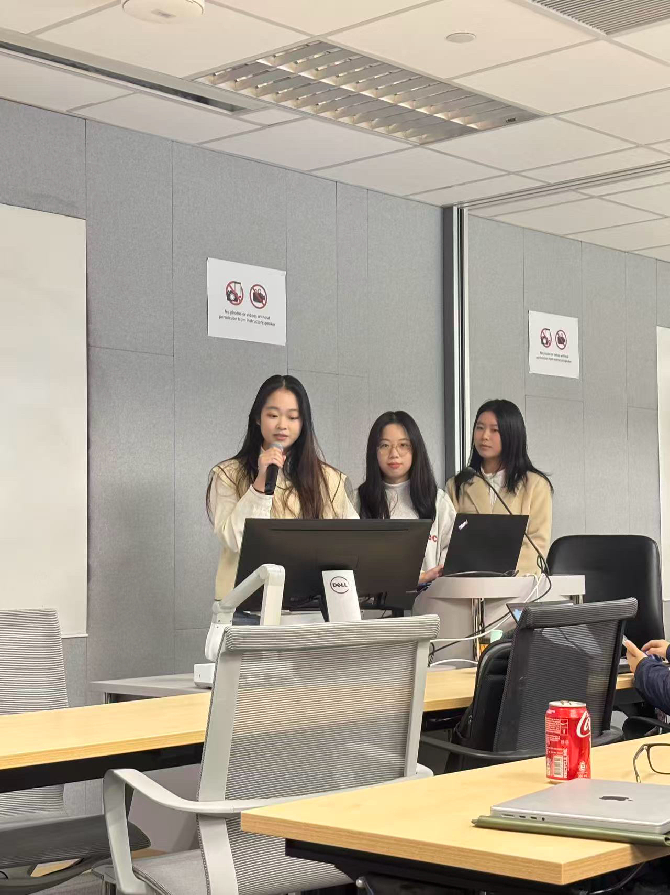

生活放映厅
工作中严谨专业，生活里热烈鲜活

热烈奔赴山海

用心感受生活
自信闪耀舞台

记录温暖瞬间
我的知识体系与学术成长路径
经管学院 | 商业分析(AI Stream) | 硕士
2025.09 - 2026.11
点击查看完整学术背景深挖
计算机学院 | 人工智能 | 本科
2021.09 - 2025.06
点击查看完整学术背景深挖

2025年，香港大学，开启AI与商业的融合之旅
我的商业实战与落地成果
AI产品经理 | 2025.03 - 2025.08
点击查看完整实习经历深挖
数据分析师 | 2024.10 - 2025.03
点击查看完整实习经历深挖
运营策划(互联网渠道) | 2024.06 - 2024.10
点击查看完整实习经历深挖
科技部 测试开发 | 2023.05 - 2023.09
点击查看完整实习经历深挖
2025年，复星AI Lab，完成首款AI产品从0到1落地
我从0到1打造的产品与项目作品
项目负责人
带领8人团队，基于8万+学生数据，通过严谨A/B测试验证教学干预效果，输出个性化教学策略。
点击查看完整项目深挖
产品经理
国内首个社区场景AI环保公益平台，打造「分类-回收-循环-捐赠」全链路闭环，兼顾公益价值与商业可持续。
点击查看完整项目深挖
项目负责人 | 独立开发
独立打造一站式AI求职评估工具，集简历分析、岗位匹配、成功率量化、优化建议于一体，完整产品闭环。
点击查看完整项目深挖

2026年，独立打造AI求职产品，解决真实求职痛点
我的核心技能与荣誉成果
点击查看完整能力与经历深挖
工作中严谨专业，生活里热烈鲜活

热烈奔赴山海
用心感受生活
自信闪耀舞台

记录温暖瞬间
期待和同频的你，一起创造有价值的产品
“感谢你完整浏览我的个人主页，期待和你相遇，一起创造更多可能。”